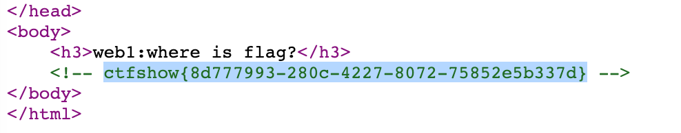

此文章为 Klee-CTF 专题
web1

右键查看源代码，发现flag
web2
右键无法查看源代码，但你可以在地址栏添加 view-source:
web3

F12，藏在返回头部
web4
访问 /robots.txt 获得内容
1 | User-agent: * |
再访问 /flagishere.txt 获得flag

web5

题目提示 phps 源码泄漏，访问 /index.phps 试试

获得flag
web6
题目提示 解压源码到当前目录，测试正常，收工
一般运维会将网站目录压缩为 www.zip ，访问后获得压缩包

解压获得flag
web7
版本控制很重要，但不要部署到生产环境更重要。
关键词：版本控制，访问 /.git/

直接获得flag
web8
要求同上，版本控制一般有 .git 或者 .svn， 访问.svn

web9
关键词：vim
vim 在未正常关闭的时候会生成 .swp 文件
访问 /index.php.swp

web10
关键词：cookie
使用 editthiscookie 打开查看得

web11
关键词：域名隐藏信息
1 | [root@Kelly ~]# nslookup |
web12
访问 /robots.txt 获得内容
1 | User-agent: * |
访问 /admin
他404
把我整不会了
web13


web14
提示中说明了 editor 翻找源代码发现有个/editor/uploads/xxx.png ，发现 /editor 可以直接访问
访问后点击上传附件按钮，点击文件空间

发现 /var/www/html/nothinghere 存在文件 /fl000g.txt

根据路径访问，获得flag
web15
在网页底部获得邮箱 1156631961@qq.com ，qq号查询发现是西安的
访问 /admin 忘记密码，填写西安，重置密码获得flag
web16
访问 /tz.php ,点击phpinfo搜索flag
web18
在控制台直接修改score，访问 /110.php 获得flag

web19
方向错了方向错了，我还想着我怎么解密呢，原来这题不用解密
右键查看源代码，获取用户名和加密后的密码，填入输入框，在控制台输入$(“#loginForm”).submit(); 获取flag
web20
这题没经验是真不会
早期access存放路径 /db/db.mdb，访问后搜索

错漏补充
信息收集——装一些插件（待补充），写工具（知识武器化），写 CheckList
vim会产生 .swp / .swo / .swn ，gedit会产生 文件名～的备份文件名
webpack的反编译
svn信息泄漏工具 SvnExploit
Apache的php解析漏洞（CVE-2017-15715），上传文件gif文件头后路径结尾为 .php/ 可以使用
替换关键文件使用mv来覆盖
HTTP协议头部，常见的字段
搞安全的整个昵称